Anamizu, Ishikawa: things to do, food and stays
Anamizu · Ishikawa
Anamizu
Highlighted on the Ishikawa map.

Stay
ＷＡＴ ＲＥＳＯＲＴ シーフロント 奥能登
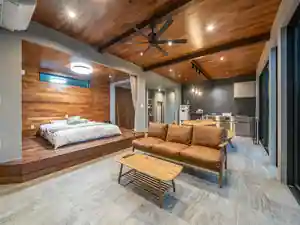
WAT RESORT Shifuronto Okunoto
Dining
福寿司
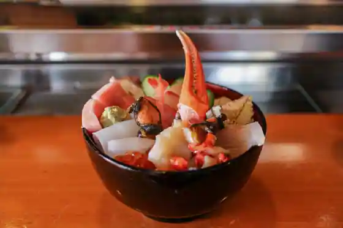
Fukuju Tsukasa
幸寿し
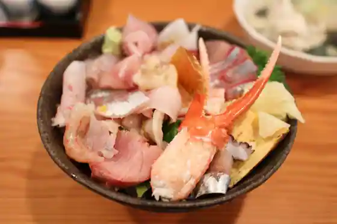
Yukitoshi Shi
cafe&炭火焼なぎさガーデン
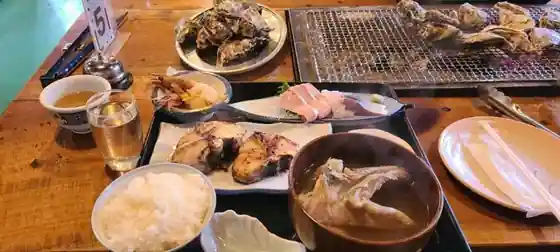
cafe& Sumibi Yaki Nagisa Garden
力
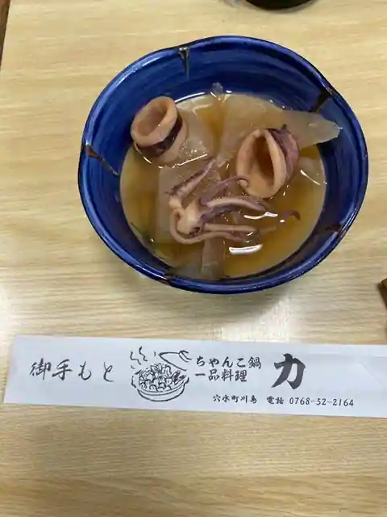
Chikara
フリースタイル

Furisutairu
お食事・寿し 高尾
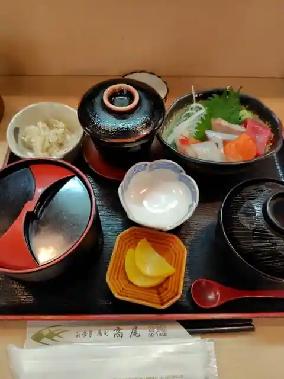
O Shokuji Hisashi Shi Takao
八幡のすしべん 穴水此木店
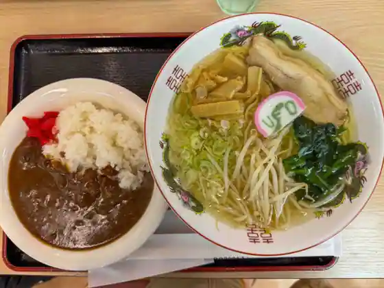
Hachiman Nosushiben Anamizu Kore Ki
もりそば
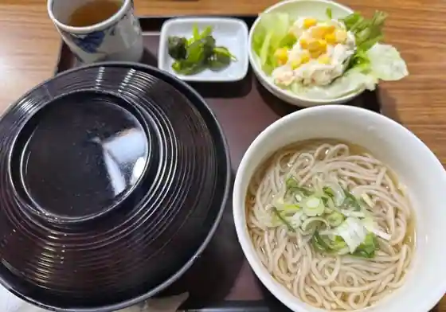
Morisoba
香林
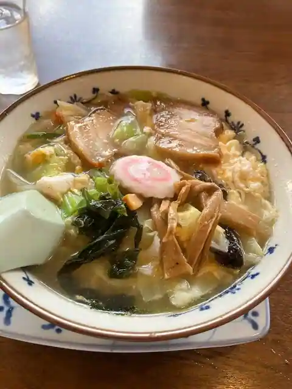
Kaori Hayashi
能登ワイン
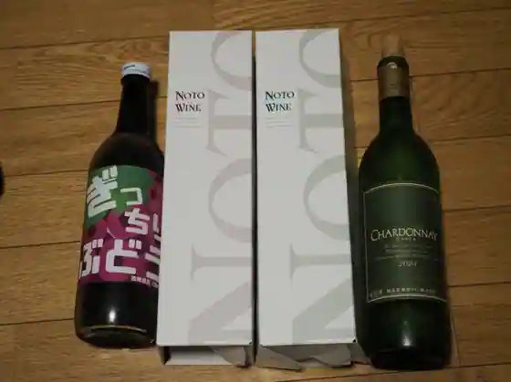
Noto Wine
どんどん 穴水店
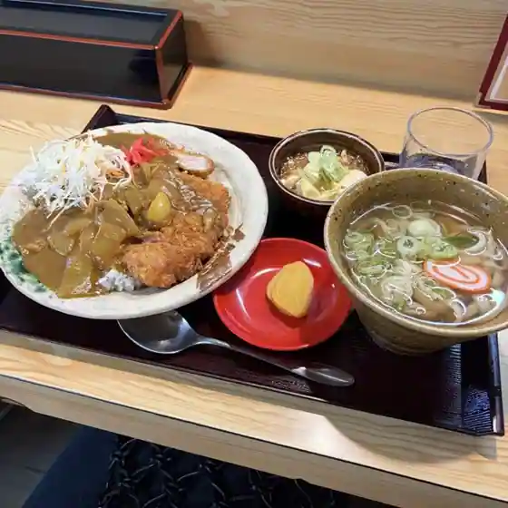
Dondon Anamizu
かき浜
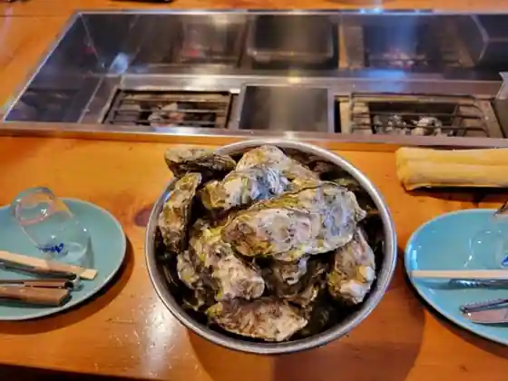
Kaki Hama
コーストテーブル
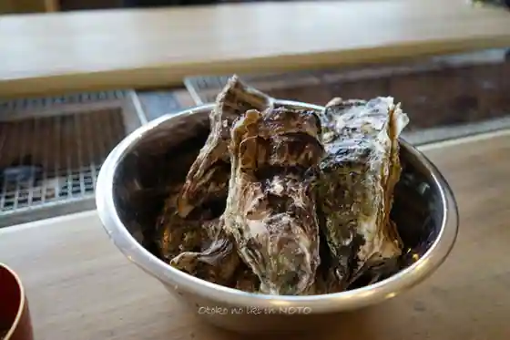
Kosutoteburu
華店
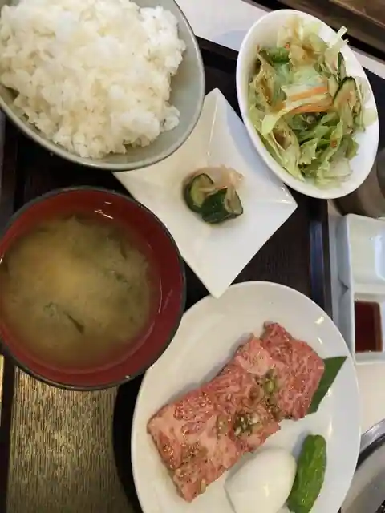
Hana
Bakery H&M
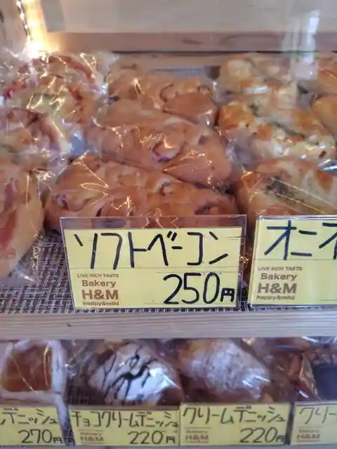
Bakery H&M
龍屋
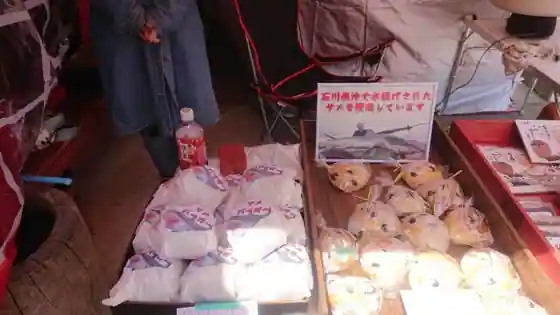
Ryu Ya
プランタン
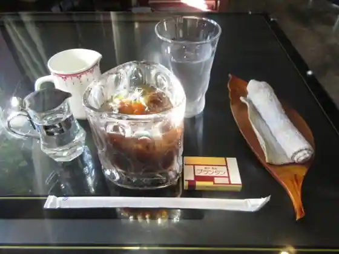
Purantan
料亭 雁月
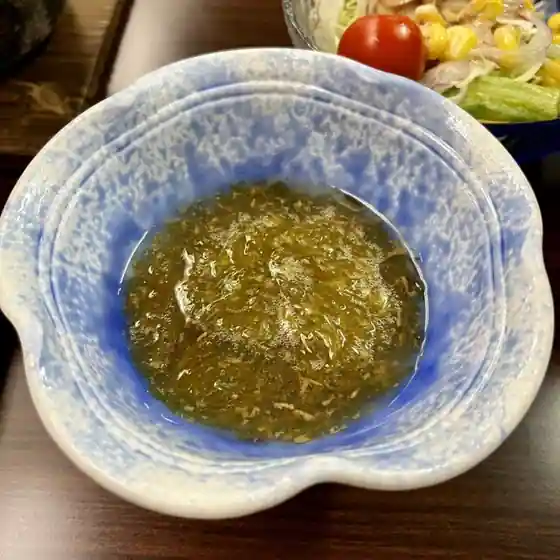
Ryotei Ganzuki
Sanglier
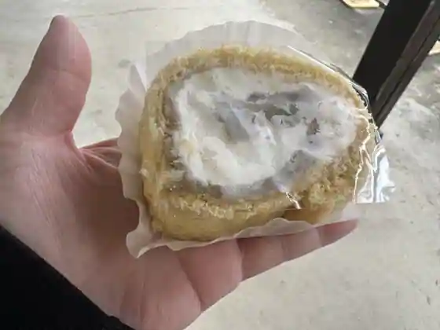
Sanglier
飛天龍・松島
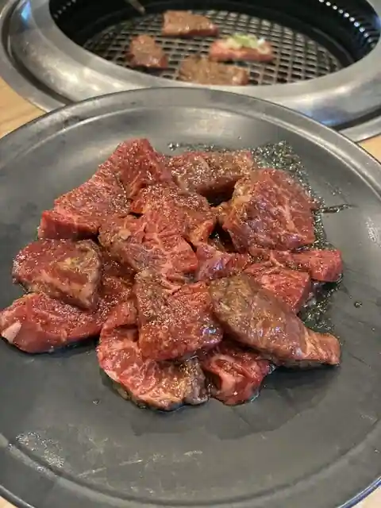
Hiten Ryu Matsushima
Hanon
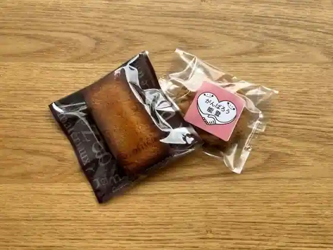
Hanon
そば処 大仏庵
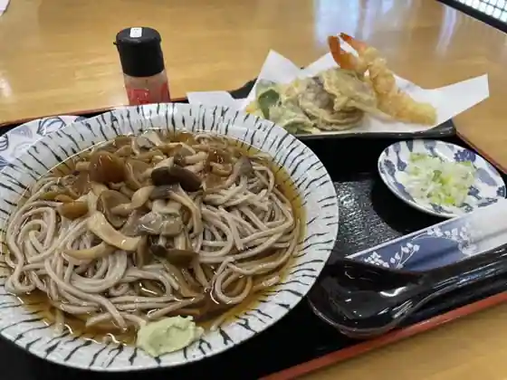
Soba Tokoro Daibutsu Iori
Sights
Roadside Station

Noto Wain

Noto Sakura Eki
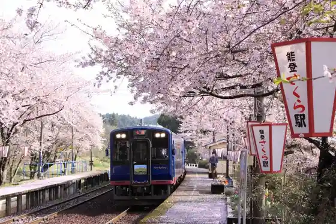
Bora Machi Yagura
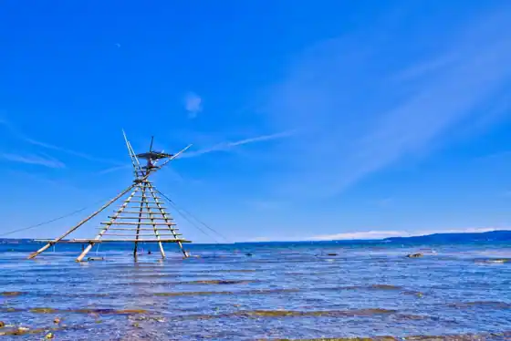
no to Tetsudo
Anamizu Bussan Kan Shiki Saisai
Anamizu Joshi
no to Kiriopun Garden 2026
Raigo Tera
Noto Nakai Imono Kan Genzai Kyukanchu
Mei Izumi Tera
Noto Mae Yukitoshi Shi
Anamizu Folk History Museum Genzai Kyukanchu
Anamizu Wan
Satori no Michi
Shiosai no Michi
Hasebe Shrine (Anamizu)
Chi Fuku In
Keyaki Kogei Taniguchi (Anamizu Kojo)
no to Tetsudo Rentasaikuru Kyushichu
Nakai Tatara Uta
Nakai Madara Uta
Anamizu Town Hall